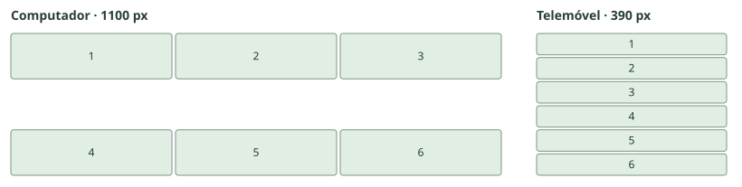

Medidas desta ficha
- Medidas a usar
- Mural: altura de 512 px, exceto no formato estreito. Intervalo: 16 px entre avisos e 8 px entre símbolos. Três cartões: descontar 32 px; dois: descontar 16 px.
- Quando muda a disposição
- Acima de 800 px: 3 por fila. Acima de 640 px e até 800 px: 2 por fila. Até 640 px inclusive: 1 por fila e altura automática.
- Resultado esperado
- 390 px: seis filas de um. 768 px: três filas de dois. 1100 px: duas filas de três.
Larguras para testar: 390 px, 768 px e 1100 px. São larguras da janela do navegador. Só escreves uma media query se o exercício a pedir.
No CSS: escreve 16px, sem espaço entre o número e a
unidade.
Primeiro passo: Abre style.css no editor e lê a etapa 1.
Quando fizeres uma alteração, guarda o ficheiro e atualiza esta página para veres o que
mudou.
Ver o resultado esperado no computador e no telemóvel
Este esquema mostra as posições, sem escala. Para a largura intermédia, usa os testes no fim.

Área de trabalho · Mural de avisos
Mural de avisos
-
Troca de livros
Traz um livro na terça-feira.
-
Chá da horta
Há hortelã fresca no balcão.
-
Leitura em voz alta
Quarta-feira, depois das 16h.
-
Prato da turma
Deixa uma sugestão na caixa.
-
Canecas
Pede uma caneca emprestada.
-
Esplanada
Abre quando parar de chover.
Etapas e conceitos desta ficha
Já conheces: Percentagens, classes, seletores e regras para diferentes larguras.
Com apoio nesta ficha: A fórmula calc() da primeira base está na etapa 2. flex-flow junta direção e quebra. align-content atua no conjunto de filas quando há altura livre.
- Prepara o mural
- Faz caber três cartões por fila
- Distribui as duas filas
- Move apenas a estrela
- Adapta o mural e atualiza o texto
Encontras as instruções de cada etapa em style.css.
Quando é que está pronto?
Usa o modo responsivo do navegador. Experimenta 390 px (telemóvel), 768 px (intermédio) e 1100 px (computador).
Assinala os testes que passaram. As marcas desaparecem quando atualizas a página; guarda o
resultado em registo.md.
Desafio opcional
A 1100 px, retira temporariamente a altura fixa. Mantém a distribuição de filas e o intervalo. O que acontece ao espaço entre as duas filas?
Para a discussão final: Caixa de linha e direção
Nos enfeites, contorna a caixa e compara a largura com os símbolos agrupados numa caixa de linha. Inverte a direção dos símbolos. No mural largo, inverte apenas a ordem das filas e repõe.
Faz a experiência no inspetor e repõe as regras no fim.